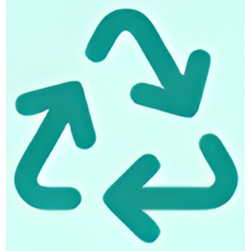

O Collect Tech é uma solução tecnológica inovadora voltada para cidades inteligentes que busca revolucionar a gestão de resíduos urbanos. Através do monitoramento inteligente de lixeiras e otimização de rotas de caminhões de coleta, nossa plataforma contribui significativamente para a redução de custos operacionais e para a sustentabilidade ambiental das cidades.




Transformar a gestão de resíduos urbanos através da tecnologia, contribuindo para cidades mais sustentáveis, eficientes e inteligentes. Acreditamos que a inovação tecnológica é fundamental para construir um futuro mais verde e econômico para todos.
Este projeto foi desenvolvido em 2026 por um grupo de estudantes dedicados a criar soluções tecnológicas para problemas urbanos reais.